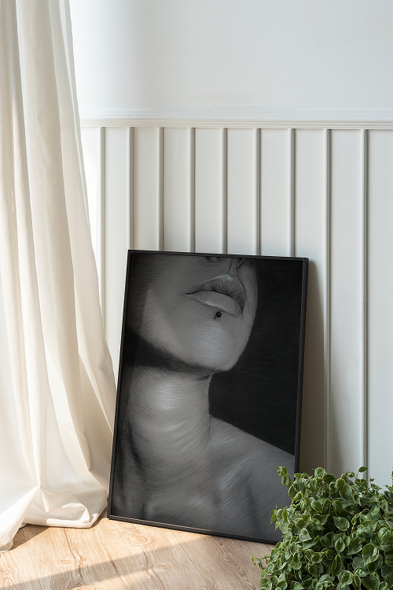
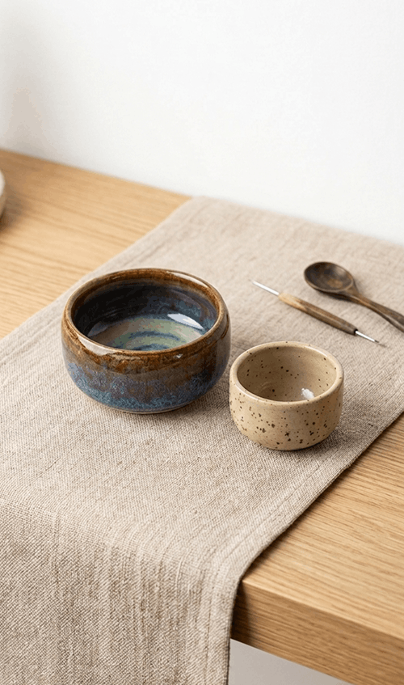
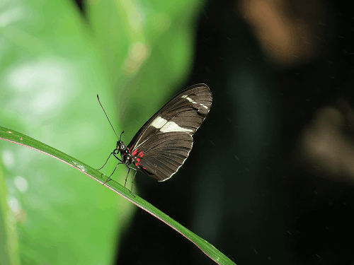
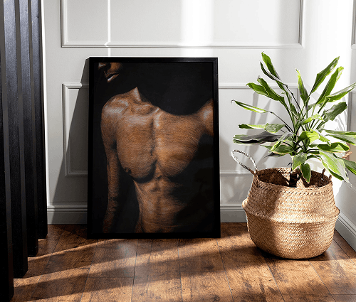
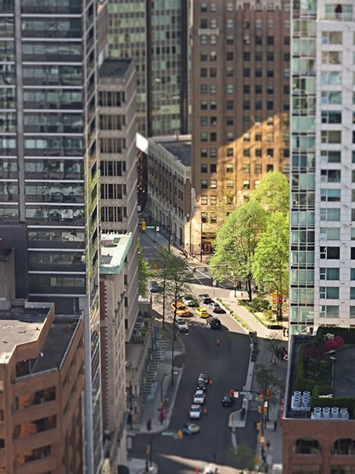
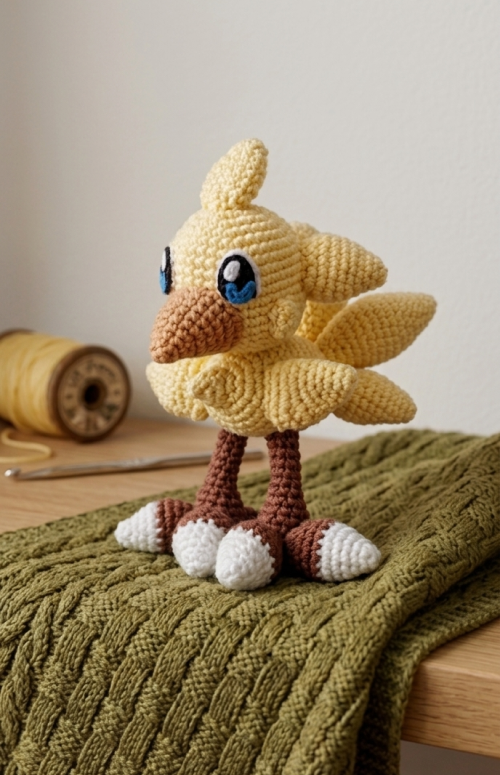
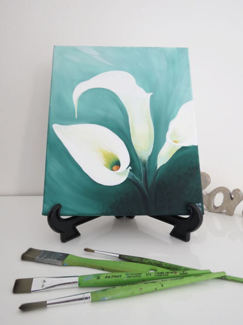
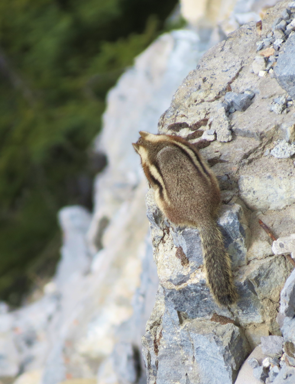
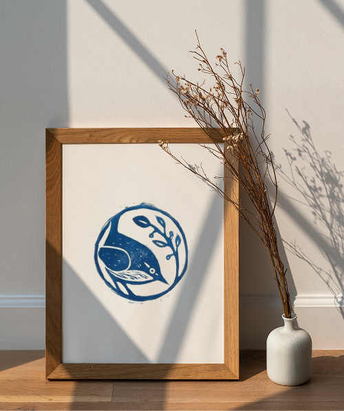

Explorations
A curated collection of personal explorations across artworks, photography, and handmade objects. This space reflects my curiosity and love for craft in all its forms. I’m drawn to creating with my hands and finding beauty in everyday details.








